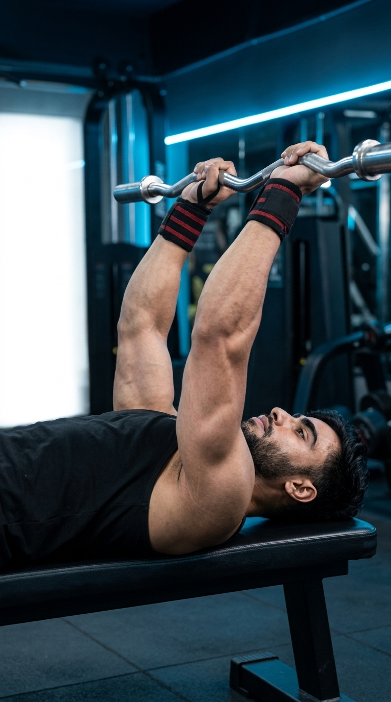

Primary Muscle
Triceps Brachii
Build Stronger, Bigger Triceps with Maximum Elbow Extension and Muscle Isolation
The Lying Triceps Extension, often called the Skull Crusher, is one of the best free-weight isolation exercises for building stronger, thicker, and more defined triceps. By keeping your upper arms stationary while extending the elbows, this movement places significant tension on all three heads of the triceps, especially the long head. It improves upper-arm strength, enhances pressing performance, and is an excellent exercise for increasing muscle size when performed with controlled technique and a full range of motion.

Triceps Brachii
EZ Bar / Barbell / Dumbbells
Intermediate
Isolation
Discover which muscles are primarily responsible for the Lying Triceps Extension and how the supporting muscles stabilize your elbows, wrists, and shoulders while allowing strict elbow extension for maximum triceps development.
Long Head, Lateral Head & Medial Head
Elbow Stabilizer
Grip & Wrist Stability
Shoulder Stabilizer
Discover how the Lying Triceps Extension builds stronger, thicker triceps, improves elbow extension strength, enhances pressing performance, and promotes greater upper-arm muscle development through a full range of motion.
The Lying Triceps Extension places significant tension on all three heads of the triceps, encouraging greater muscle growth and increasing overall upper-arm size.
Repeated elbow extension against resistance strengthens the triceps, improving performance in pressing exercises and everyday pushing movements.
Stronger triceps contribute to more powerful bench presses, shoulder presses, dips, and other compound upper-body movements.
Since the triceps account for most of your upper-arm mass, developing them leads to thicker, stronger, and more defined arms.
Performing the exercise with strict technique develops better elbow stability, coordination, and mind-muscle connection for more effective triceps training.
Whether performed with an EZ bar, barbell, or dumbbells, the Lying Triceps Extension is a highly effective isolation exercise for building triceps in both home and gym workouts.
Follow these step-by-step instructions to perform the Lying Triceps Extension with proper body position, controlled elbow movement, and a full range of motion to maximize triceps activation and build stronger, more defined arms.
Lie flat on a bench while holding an EZ bar, barbell, or dumbbells with your arms extended above your chest. Keep your feet firmly planted on the floor for stability.
Choose a weight that allows you to maintain complete control throughout every repetition.
Slowly bend your elbows to lower the weight toward your forehead or just behind your head. Keep your upper arms nearly perpendicular to the floor throughout the movement.
Move only at the elbows and avoid allowing your upper arms to drift backward.
Press the weight back to the starting position by extending your elbows while keeping your upper arms stationary. Focus on contracting your triceps throughout the movement.
Avoid locking your elbows aggressively at the top to keep constant tension on the triceps.
Pause briefly at the top of the movement and contract your triceps before beginning the next repetition.
Holding the contraction for a second helps improve your mind-muscle connection.
Continue performing each repetition with a slow, controlled tempo while maintaining proper elbow position and a full range of motion.
Focus on quality repetitions rather than lifting heavier weight to maximize triceps growth and reduce injury risk.
Avoid these common technique mistakes to maximize triceps activation, protect your elbows, and perform the Lying Triceps Extension safely and effectively.
Lifting more weight than you can control often causes poor technique, shortened range of motion, and extra stress on the elbows and wrists.
Choose a weight that allows you to perform every repetition with strict form and full control.
Allowing your upper arms to swing backward or forward shifts tension away from the triceps and reduces the effectiveness of the exercise.
Keep your upper arms nearly stationary and move only through the elbow joint during each repetition.
Dropping the weight quickly reduces muscle tension, limits control, and increases stress on the elbow joints.
Lower the weight slowly and under control to maximize time under tension and muscle activation.
Bouncing the weight or rushing through repetitions reduces triceps engagement and increases the risk of injury.
Perform each repetition with a slow, smooth tempo and focus on squeezing your triceps at the top of every movement.
Apply these expert coaching cues to improve your Lying Triceps Extension technique, maximize triceps activation, and build stronger, more defined arms with every repetition.
Throughout the movement, keep your upper arms nearly perpendicular to the floor and allow only your forearms to move as you bend and extend your elbows.
Stable upper arms keep the tension on your triceps instead of shifting it to your shoulders.
Slowly lower the weight toward your forehead or just behind your head to create a deep triceps stretch before extending your elbows.
Controlled lowering increases time under tension and promotes greater muscle growth.
Fully extend your elbows and briefly contract your triceps before beginning the next repetition.
A strong squeeze at the top improves your mind-muscle connection and triceps activation.
Use a manageable load that allows you to complete every repetition with strict form instead of relying on momentum or excessive weight.
Perfect technique produces better long-term strength gains and reduces unnecessary stress on your elbows.
Progress from mastering the Lying Triceps Extension with a light weight to performing heavier sets while maintaining strict elbow control, a full range of motion, and maximum triceps activation.
Start with a light EZ bar, barbell, or dumbbells to learn proper bench positioning, elbow alignment, and controlled movement before increasing the load.
Stable upper arms, controlled elbow movement, full range of motion, and strict technique.
Practice lowering the weight slowly toward your forehead or just behind your head before extending your elbows with complete control.
Controlled eccentric, smooth tempo, full elbow extension, and continuous triceps tension.
Once your technique is consistent, gradually increase the resistance while maintaining proper elbow position and complete control throughout every repetition.
Progressive overload, strict form, full range of motion, and maximum triceps contraction.
Challenge your triceps with heavier loads, slow eccentric repetitions, pause reps, or higher training volume while maintaining perfect form from the first repetition to the last.
Advanced intensity techniques, strict control, complete range of motion, and maximum muscle stimulation.
Find answers to common questions about Lying Triceps Extension technique, muscles worked, proper form, training frequency, and how to maximize triceps development safely and effectively.
The Lying Triceps Extension primarily targets all three heads of the triceps brachii, with assistance from the anconeus, forearms, and shoulder stabilizers to control the movement.
This exercise isolates the triceps by minimizing assistance from other muscle groups, allowing you to build strength and muscle size through a controlled range of motion.
An EZ bar is the most popular choice because it reduces wrist strain. However, a straight bar or dumbbells can also be effective depending on your comfort, equipment, and training goals.
Yes. Beginners should start with a light weight, learn proper elbow positioning, and perform slow, controlled repetitions before progressing to heavier loads.
For muscle growth, perform 2–4 working sets of 8–15 repetitions while maintaining strict form, controlled tempo, and a full range of motion.
Yes. Regularly performing the Lying Triceps Extension with progressive overload, proper nutrition, and adequate recovery can increase triceps size, leading to stronger, thicker, and more defined upper arms.
Explore other triceps exercises that complement the Lying Triceps Extension and help you build stronger, bigger arms using different equipment, movement patterns, and training variations.


Continue building stronger, bigger triceps with step-by-step exercise guides covering proper technique, muscles worked, common mistakes, expert coaching tips, and progression strategies for every fitness level.